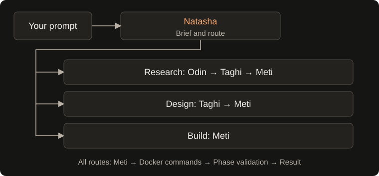

Workflow & alignment
How the workflow runs

- Natasha — coordinator: produces a typed task brief, a 5-sentence intent alignment brief, and conducts an interactive Grill-Me interview (up to 10 questions) to clarify goals, entry mechanisms, and edge cases before routing. Prompts with a low-friction clarification wizard, supports mid-way intent pivots, queries existing vault connections, and can look up official library names online.
- Odin — researcher: queries vault graph metadata and external web documentation / package registries (PyPI, npm, Tavily API) to produce technical findings and recommended stacks. Research notes record resolved vault notes and external search-result URLs. Tasks marked with
--research/--research-onlycomplete cleanly after Odin without invoking design or implementation. - Taghi — architect: produces an architecture overview, user input surface specification (
input_interface_spec), dependencies, and ordered execution phases with explicit validation commands. Conducts an architectural grill interview and presents an interactive approval gate before Meti implements. Phases are constrained to actionable sandbox validation; conditional gates or unprovided external credentials are documented in architecture overview notes rather than active execution phases. - Meti — implementer: writes code through Docker commands with live progress spinners and validates phases in order. Generates a workspace
README.mdwith run/test instructions, logs execution details to.state/task.log, and renders a file tree andHow to Run & Testbanner. A reported success is downgraded to failure if any phase remains unvalidated.
Agents run sequentially along the selected route. Research requests continue through design and implementation; design requests continue through implementation. Research-only tasks complete immediately after Odin.
Interactive alignment and execution modes
To eliminate early misunderstandings and prevent wasted model calls, BuildRelay provides an interactive alignment and review pipeline:
- Interactive "Grill-Me" Alignment Sessions (Natasha & Taghi):
- Natasha Intent & Scope Grill: Evaluates the request and conducts a targeted interview (up to 10 questions) exploring operational goals, user entry methods, frequency/triggers, schemas, and operational edge cases.
- Taghi Architecture & Schema Grill: Before finalizing specifications, conducts an interview (up to 10 questions) covering concrete column/field schemas, form layout, component trade-offs, and offline mock strategies.
- Ergonomic Terminal Navigation:
- Pressing
[Enter]immediately accepts the recommended default. - Pressing
[1, 2...]selects a specific numbered option. - Pressing
[c]enters custom requirements, or type freeform text directly at the prompt. - Pressing
[a]accepts all remaining defaults without interruption. - Pressing
[q]cancels execution cleanly.
- Pressing
- Natasha's 5-Sentence Intent Brief:
- Goal: Exactly what is being built.
- Features: Key functionality in scope.
- Stack: Runtime, frameworks, and base Docker image.
- Exclusions: Out-of-scope or deferred requirements.
- Next Steps: Target lead and first deliverable.
- Taghi Architectural Review & Approval Gate:
- Taghi presents a detailed architecture review card displaying the system design, the concrete user input interface specification (
input_interface_spec), required dependencies, and ordered phases. - Pressing
[Y/enter]approves the architecture and authorizes Meti to begin implementation. - Pressing
[r]allows requesting revisions to schemas, fields, or phases, triggering Taghi to regenerate the specification with user feedback. - Pressing
[q]aborts before container code generation.
- Taghi presents a detailed architecture review card displaying the system design, the concrete user input interface specification (
- Execution Flags:
- Default interactive: Runs the alignment interviews and approval gates before initiating research, design, or implementation.
- Headless mode (
-y,--yes,--auto): Automatically accepts recommended defaults without terminal prompts; ideal for scripting, background tasks, and CI. - Step-by-step mode (
--step): Prompts for confirmation before handing off to each lead (Natasha → Odin/Taghi → Meti). If the user pivots during a step gate, downstream checkpoints in.state/tasks.dbare safely rolled back and re-routed. - Research-only mode (
--research,--research-only): Completes immediately after Odin's research report and web citations, without executing Taghi or Meti.
- Meti Delivery Confirmation Gate:
- Once all implementation phases pass validation, BuildRelay presents an interactive delivery card displaying the workspace deliverables.
- Highlights detected User Input Surfaces & Entry Points (e.g. Setup wizards, Form sync scripts, Web forms, CLI input tools).
- Pressing
[Enter]or[c]accepts the delivery and marks the task complete. - Pressing
[r]triggers Meti's live Refinement Loop to adjust documentation, add visual flowcharts, or generate setup scripts based on user feedback before finalizing.
- Mandatory User Input Surface & Entry Point:
- Eliminates the "ghost pipeline" trap where an application is built without an interface for entering data.
- Natasha defines the input surface in the intent brief; Taghi architects a dedicated execution phase and
input_interface_spec(e.g. auto-created Google Form, web form, or interactive CLI); Meti implements and verifies the concrete entry point.
- Two-Tier Verification Architecture:
- Tier 1 (Automated Docker Sandbox): Meti validates business logic and data mappers inside isolated Docker containers using deterministic local unit tests, fixtures, and mocked service adapters (e.g., mock
SpreadsheetApp, simulated REST webhooks). - Tier 2 (Guided Live Verification): Meti generates a live smoke-test script (e.g.,
scripts/verify_live.pyor Apps ScripttestDirectSync()) and an interactive Live Verification Checklist inREADME.mdwith numbered instructions for verifying against real accounts, spreadsheets, or cloud endpoints.
- Tier 1 (Automated Docker Sandbox): Meti validates business logic and data mappers inside isolated Docker containers using deterministic local unit tests, fixtures, and mocked service adapters (e.g., mock